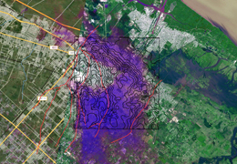
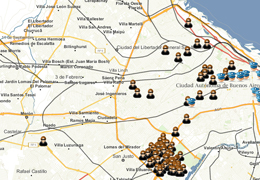
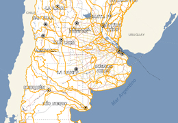

Descripción
ArgenWamp es una herramienta open source que te permite construir mapas con datos guardados en una Google Spreadsheet.
- Este mapa va a estar siempre online tengas o no servidor porque se basa en la infraestructura de Google Docs.
- Podés incrustar el mapa en tu web o compartir el link .
Puede traer datos de múltiples fuentes y soporta:
- Capas WMS
- Capas KML ya publicadas en la web
- Marcadores a partir de coordenadas o Geocoding (basado en nominatim de OpenStreetMap).
Criteria
- Muchas personas están acostumbradas a las planillas de cálculo como estructuras de datos.
- El código de esta herramienta consume JSON.
- Google Ofrece por cada documento publicado una url con el documento JSON que representa al documento spreadsheet. Es por eso que esta herramienta sirve para consumir JSON de otra fuente.
- Sí, los "datos" quedan guardados en google. Pero, no hace falta guardar los datos más importantes del mundo en este tipo de mapas.
- Es una herramienta útil para bocetar mapas a partir de KML o servicios WMS (datos ya publicados conforme a estándares abiertos).
- Este proyecto se propone acercar los servicios WMS y los KML ya publicados a quienes no dispongan de mayores habilidades informáticas que el manejo del una planilla de cálculos y una cuenta de Google.
- Esta herramienta está construída como 2 html y una plugin de jquery. que interpreta json. Sea cual sea el origen (Google Docs, una URL de un documento JSON o un objeto javascript)
Construí tu mapa En tu sitio o blog en poco tiempo.
Paso 1
Creá una nueva spreadsheet a partir de la plantilla
Creá un nuevo mapa usando la plantlla. Es tan simple como completar campos de título, ubicación y/o URLs en las columnas apropiadas.
Paso 2
Publicala en la web
¿Cómo se publica una spreadshet?
- En el menú Archivo, seleccioná "Publicar en la Web". En la siguiente ventana, tildá la casilla "Volver a publicar automáticamente cuando se realicen los cambios"
- Asegurate de que todas las demás casillas estén destildadas.
- Hacé click en "Iniciar la publicación". Al hacer esto, te da una URL para incrustar la spreadsheet en tu archivo HTML.
Paso 3
Pegá la URL de tu spreadsheet
Después de copiar la URL que google te da, podés copiar el Código para incrustar y pegarlo en tu sitio (tal cual como harías para incrustar un video de Youtube por ejemplo).
Ejemplos
Estos son algunos ejemplos simples creados con argenwamp
-

Inundaciones La Plata
Combina dos capas WMS de imágenes satelitales y archivos KML.
-

Pueblos originarios
Usa un KML online que proviene desde el servidor de mapas de Mapa Educativo.
-

Anuncios de delitos en vivo
Combina dos recursos JSON online, de denuncias y de comisarías, tomados por un script incluído en la spreadsheet.
-

Cuencas hídricas según INTA
Muestra una capa WMS de cuencas hídricas proveniente del Instituto Nacional de Tecnología Agropecuaria.